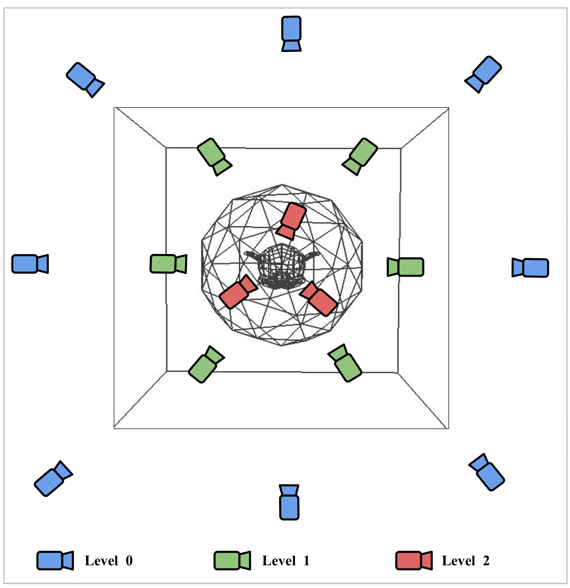

|
Srinath Ravi I'm a Research Assistant at Vision and AI Lab (VAL) at Indian Institute of Science, Bengaluru where I mostly work on NeRF and Diffusion models Before joining Vision and AI Lab I worked at Springworks as a Machine Learning Engineer working on document parsers and algorithmic trading bots. I completed my B.Tech in Computer Science and Engineering (2018-2022) from DSCE, Bengaluru. |
{kind=link}
ResearchI'm interested in computer vision, machine learning and image processing. Most of my research is about scene understanding from images. |
|
 |
Strata-NeRF: Neural Radiance Fields for Stratified Scenes
Ankit Dhiman, Srinath R, Harsh Rangwani, Rishubh Parihar, Lokesh Boregowda, Srinath Sridhar, R Venkatesh Babu ICCV, 2023 Neural Radiance Fields for scenes with multiple levels or partitions. |

|
CoRF : Colorizing Radiance Fields using Knowledge Distillation
Ankit Dhiman, Srinath R, Srinjay Sarkar, Lokesh Boregowda, R Venkatesh Babu AI3DCC @ ICCV2023 Radiance field network based on Plenoxels to colorize multi-view greyscale images. |